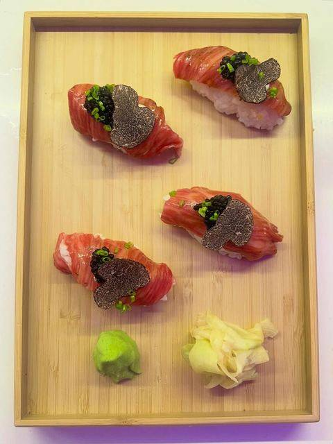
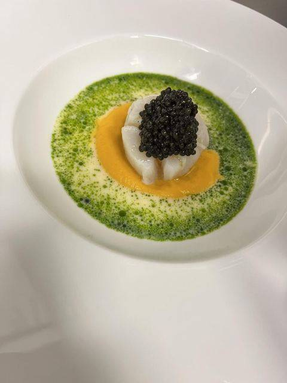
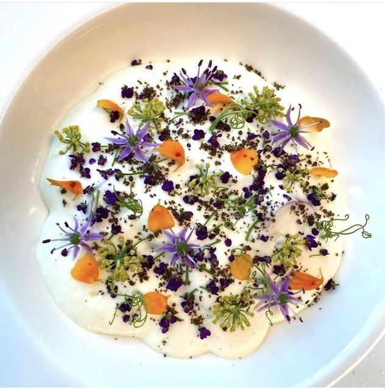
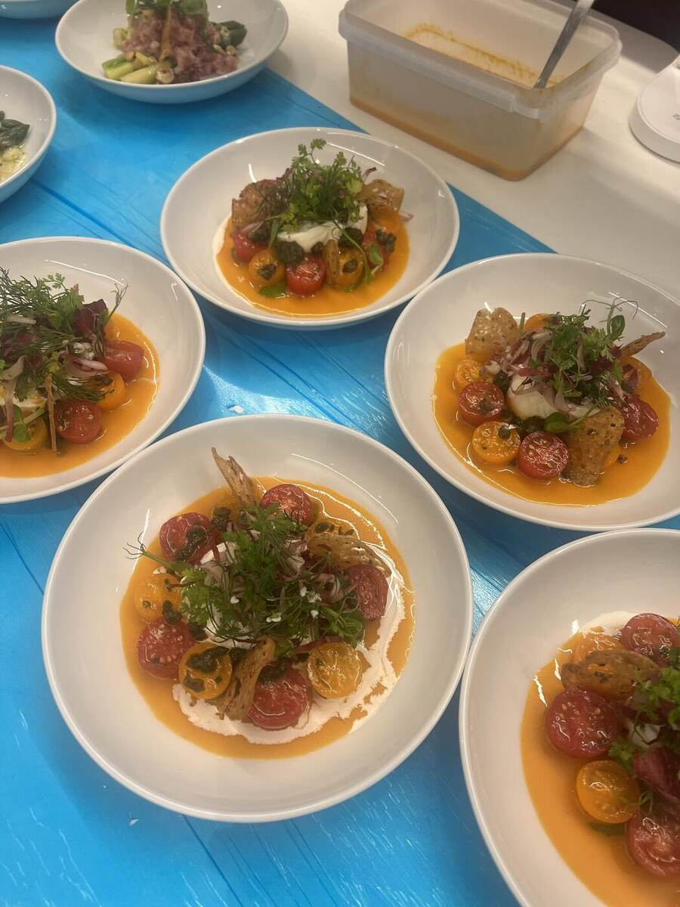
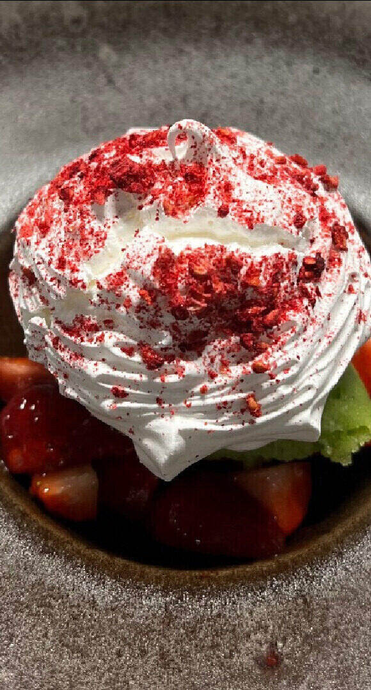
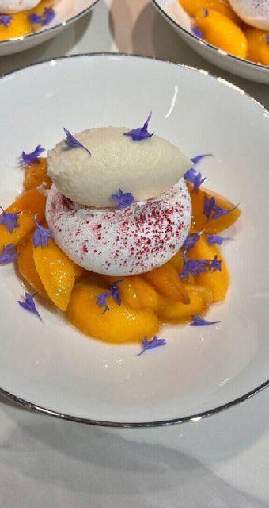
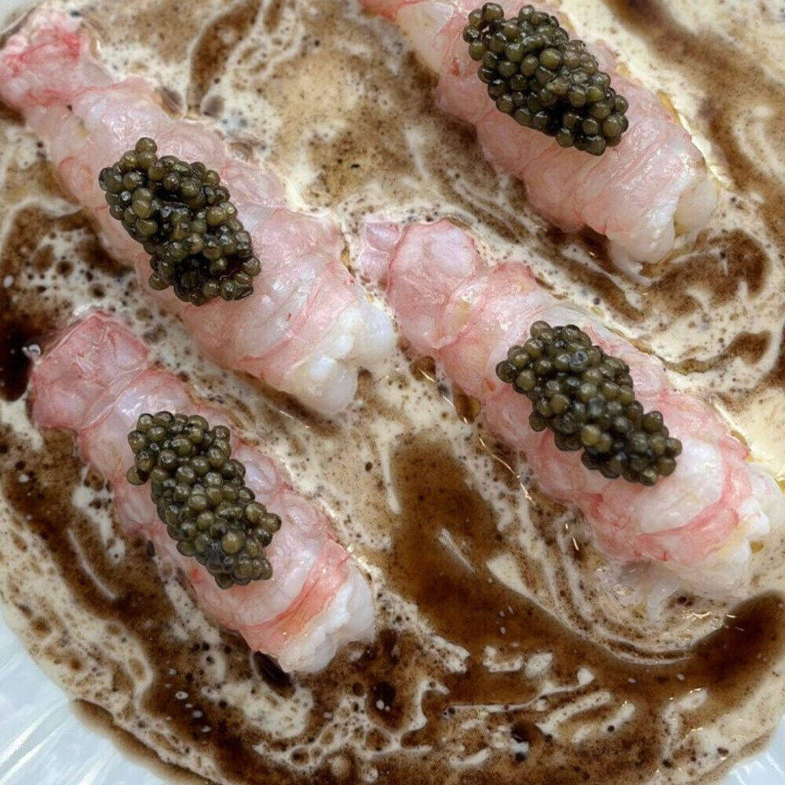
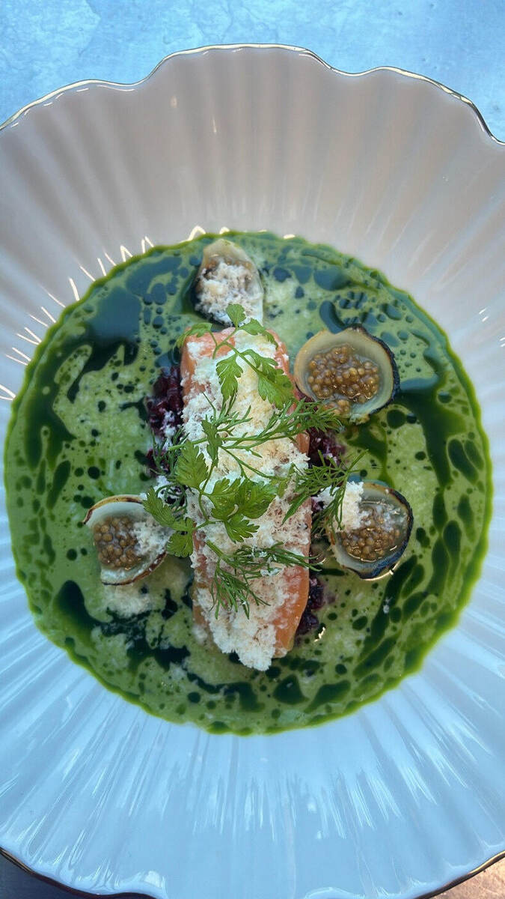

Bespoke Cuisine,
Wherever You Are
Residences · International · Yachts · Private Dining
Bespoke fine dining for private residences, superyachts and international events. Seasonal ingredients, fine-dining technique, and an entirely discreet service.


Born in Spain in 1998.
Trained in kitchens that set the standard.
Alejandro began his career under the guidance of Martín Berasategui (3 Michelin stars), building a strong foundation in fine dining before developing expertise across a wide range of international cuisines. Since 2020, he has worked exclusively with UHNW families, private residences, and superyachts across the UK, France, and Greece.
Now based in London, Alejandro creates bespoke dining experiences, from daily family meals and intimate dinners with friends to celebrations and private events for hundreds of guests. He leads a trusted team of sous chefs, pastry chefs, bakers, front-of-house professionals, and drinks managers, ensuring every event is delivered with the same exceptional standard of service and attention to detail.
"There is no secret in my kitchen, only passion."
A journey around the world,
served on a single plate.
Alejandro's concept: tailoring cuisine to each client's desires by fusing the finest ingredients from different culinary traditions.
Recent dishes















Where Alejandro cooks
London Private Household
Resident chef service for family homes across London, day in, day out.
02Private & Corporate Events
One-off dinners, celebrations and corporate receptions, planned end to end.
03Gala Dinners
High-end receptions for private clients and luxury brands.
04International
Travel to any destination with team, menu and logistics fully coordinated.
05Yachts & Superyachts
Onboard chef across the Mediterranean and the Caribbean, with daily menus adapted to each voyage.
06Cocktail & Bar Service
Bespoke bar setup and drinks menus, personalised for your event.